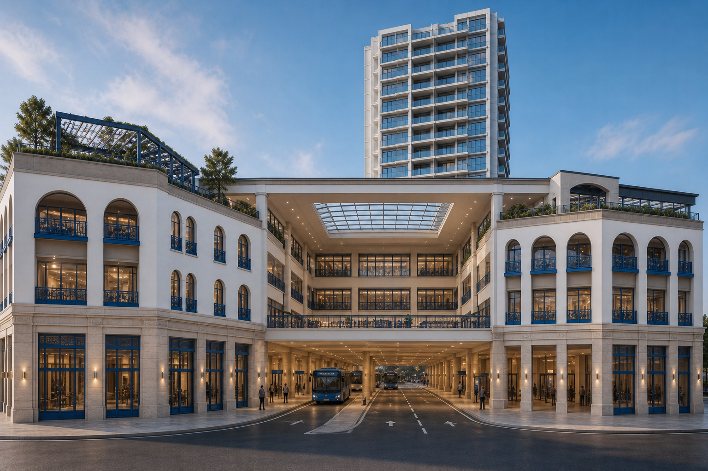
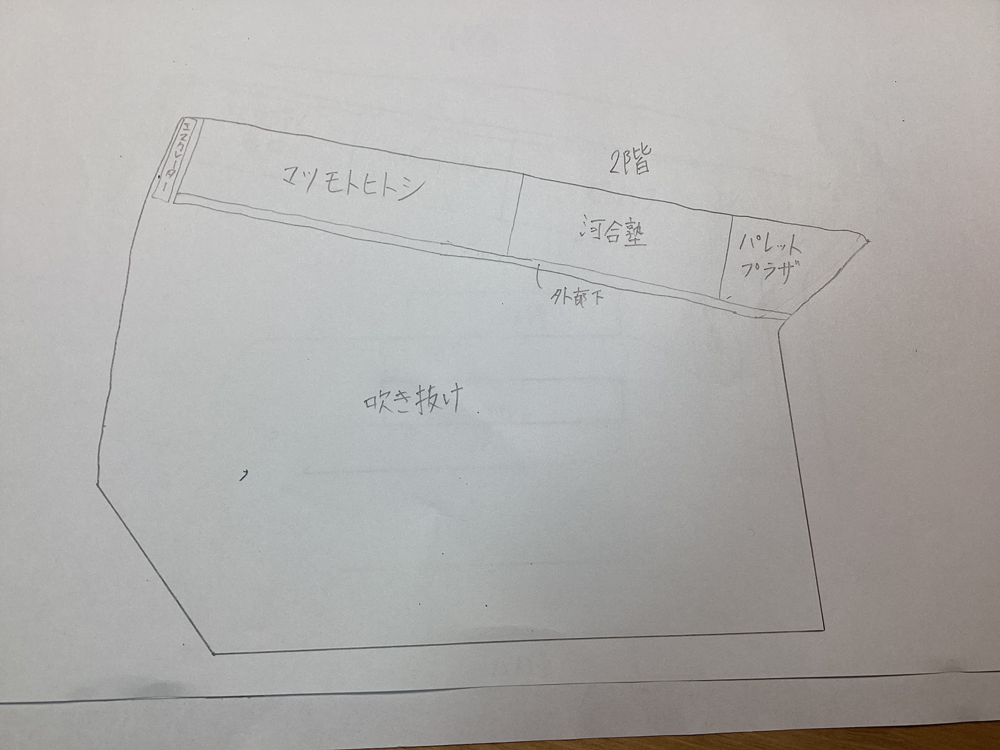
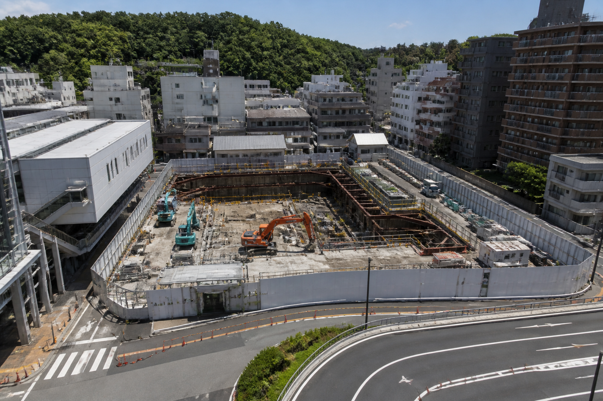
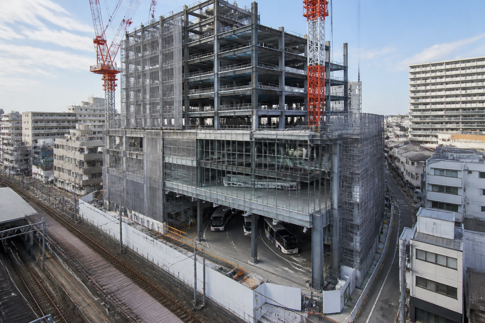
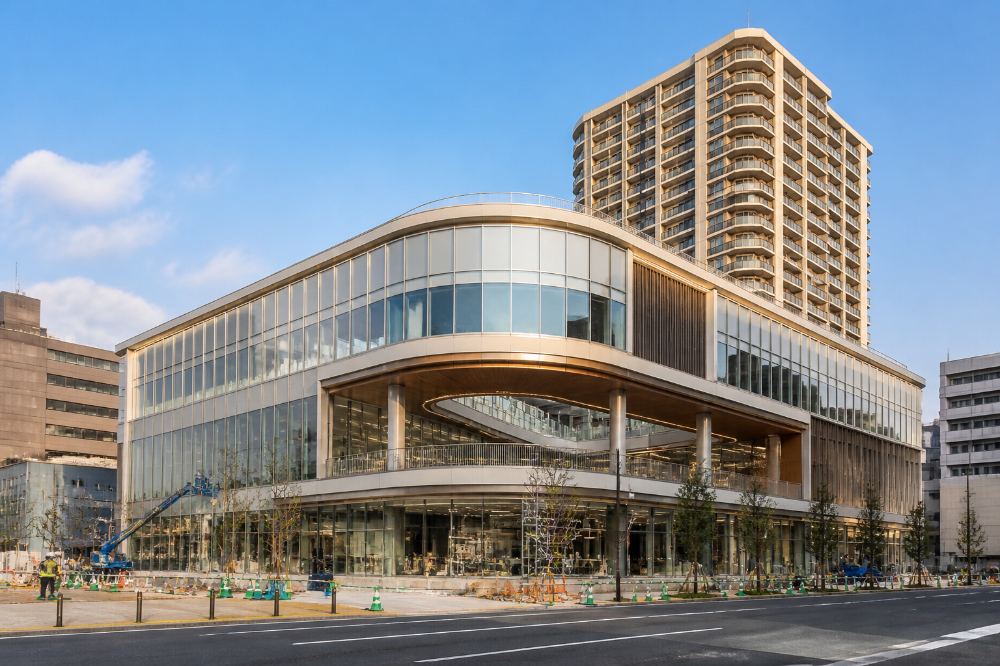

🚉
1F 駅とロータリー
新大倉山駅の改札、道路、バスロータリーを建物の中にまとめます。

店名を押すと公式サイトへ
新大倉山駅の改札、道路、バスロータリーを建物の中にまとめます。
駅帰りにすぐ寄れる、食料品や日用品のスーパー。
吹き抜けの周囲にある薬局。河合塾やパレットプラザも入ります。
駅から通いやすい学習スペース。
地域の暮らしを支える銀行。
吹き抜けを眺めながら休憩できます。
マンションの一部を小さくして、子どもが遊べる緑の広場に。
吹き抜けは2階のロータリー部分だけ

調査から完成まで

大倉山駅周辺の狭い道路とバスの混雑を調査し、資料の区画内で工事を始めます。

建物の中にバスロータリーをつくり、2階のロータリー部分だけを吹き抜けにします。

東急ストアや既存店舗を配置し、3階のロビーと4階の屋上公園を整えます。
商業施設の案内板をイメージ
計画地：横浜市港北区大倉山1-1-1付近
今ある店も、新しい暮らしも大切に。
既存店舗は新しい駅ビルにも入り続けられる計画です。